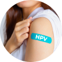

Prevenção Feminina
A partir dos 15 anos
- Vacinação em dia (HPV, Tétano, Hepatite B, Influenza, COVID)
- Consulta ginecológica inicial (orientação sobre saúde menstrual, contracepção e prevenção de ISTs)
A partir dos 20 anos
- Exames de sangue e urina anuais (hemograma, glicose, colesterol, função renal e hepática)
- Check-up odontológico e oftalmológico
- Exame dermatológico (rastreamento de câncer de pele)

A partir dos 25 anos
- Papanicolau (preventivo) a cada 3 anos (se não houver alterações)
- Rastreio do HPV (se indicado)

A partir dos 30 anos
- Exames de sangue e urina anuais (hemograma, glicose, colesterol, função renal e hepática)
- Check-up odontológico e oftalmológico
- Exame dermatológico (rastreamento de câncer de pele)
A partir dos 40 anos
- Mamografia anual ou bianual (dependendo do histórico)
- Exames cardiovasculares mais detalhados (eletrocardiograma, teste ergométrico, etc.)

A partir dos 50 anos
- Colonoscopia (a cada 5 anos, ou antes se houver risco)
- Monitoramento para osteoporose (Densitometria óssea)